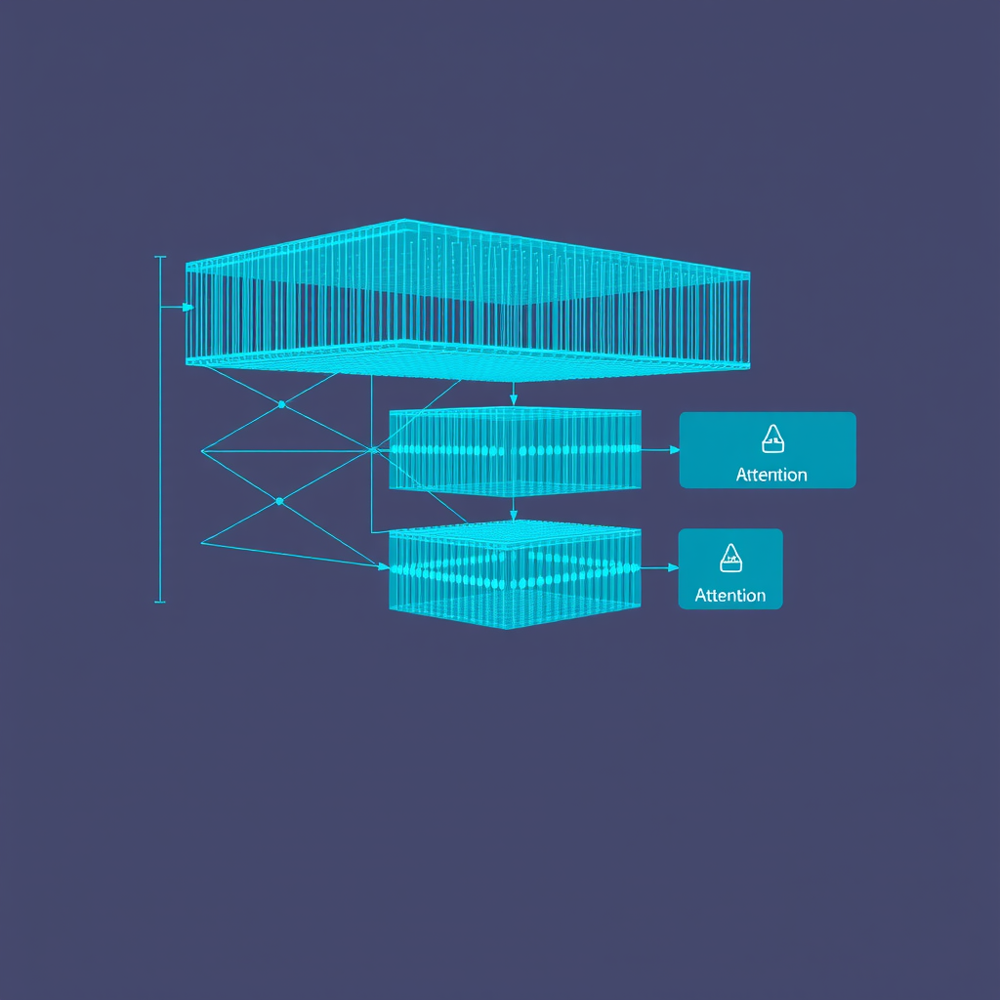
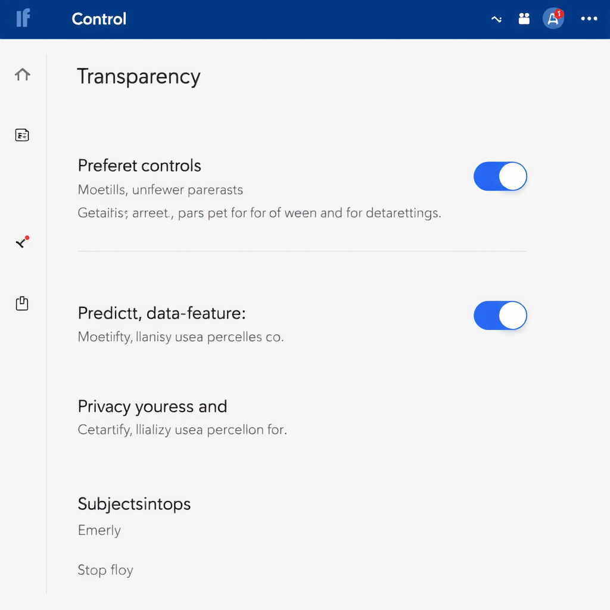

The Evolution of Predictive Intelligence: How Modern Systems Anticipate Human Needs
An in-depth exploration of how contemporary computational systems have developed the capability to predict user intentions before explicit commands are given.
In the rapidly evolving landscape of artificial intelligence and machine learning, one of the most fascinating developments has been the emergence of systems capable of anticipating human needs before they are explicitly articulated. This phenomenon, which we call predictive intelligence, represents a fundamental shift in how we interact with technology—moving from reactive responses to proactive assistance.
The Foundation: Pattern Recognition at Scale
At the heart of predictive intelligence lies sophisticated pattern recognition. Modern systems analyze vast amounts of behavioral data, identifying subtle correlations between user actions, contextual factors, and eventual outcomes. These patterns form the basis for anticipatory features that seem almost prescient in their accuracy.
Consider how contemporary search engines have evolved beyond simple keyword matching. Today's anticipatory AI systems analyze your search history, current context, time of day, location, and even trending topics to predict what information you're seeking before you finish typing your query. This isn't magic—it's the result of processing billions of data points to understand human information-seeking behavior.
Behavioral Analysis: Understanding Intent Through Action
Predictive systems excel at behavioral analysis—the process of understanding user intent through observed actions rather than explicit commands. This involves tracking micro-interactions: how long you hover over certain options, which features you use in sequence, when you pause or backtrack, and how your usage patterns change over time.
Smart home devices provide an excellent example of behavioral analysis in action. These systems learn your daily routines—when you typically wake up, your preferred temperature settings at different times of day, which lights you use most frequently. Over time, they begin adjusting settings automatically, creating an environment that adapts to your needs without requiring constant manual input.
The Role of Contextual Awareness
Context is everything in predictive intelligence. A system that understands context can differentiate between similar actions performed in different situations and respond appropriately. This contextual awareness encompasses multiple dimensions:
- Temporal context:Understanding how time of day, day of week, and seasonal patterns influence user needs
- Environmental context:Considering location, weather, ambient conditions, and surrounding activities
- Historical context:Leveraging past interactions and outcomes to inform current predictions
- Social context:Incorporating broader trends and collective behaviors into individual predictions
Real-World Applications: From Theory to Practice
The practical applications of predictive intelligence span virtually every domain of digital interaction. Let's examine several key areas where these systems are fundamentally changing user experiences:
Conversational Search and Discovery
Modern search platforms have evolved into conversational partners that understand the nuance and intent behind queries. These systems don't just match keywords—they comprehend the underlying question, anticipate follow-up queries, and proactively surface related information you're likely to need next.
This capability transforms information discovery from a linear process into a dynamic dialogue. The system might recognize that your query about "best practices for remote team management" is likely to be followed by questions about specific tools, communication strategies, or productivity metrics—and it prepares relevant information in advance.
Productivity Tools and Workflow Optimization
Professional productivity applications increasingly incorporate predictive features that streamline workflows. Email clients suggest responses based on message content and your typical communication patterns. Project management tools anticipate task dependencies and resource needs. Calendar applications propose optimal meeting times by analyzing participants' schedules and preferences.
These systems learn from your work patterns, identifying bottlenecks and inefficiencies you might not consciously recognize. They might notice that you always review certain types of documents before meetings and automatically surface them at the appropriate time, or recognize that specific tasks typically require particular resources and proactively make them available.
Content Curation and Personalization
Content platforms use predictive intelligence to curate personalized experiences that evolve with your interests. These systems analyze not just what you consume, but how you consume it—which articles you read completely versus skim, which videos you watch to the end, which topics prompt you to seek additional information.
Key Insight:The most effective predictive systems balance personalization with serendipity, occasionally introducing unexpected content that expands your horizons while maintaining relevance to your core interests.
The Technology Behind the Magic
Understanding how predictive intelligence works requires examining the technological infrastructure that makes it possible. Several key technologies work in concert to create these seemingly prescient systems:
Machine Learning Models
At the core are sophisticated machine learning models trained on massive datasets of user interactions. These models identify patterns that would be impossible for humans to detect manually, learning complex relationships between inputs and outcomes. Neural networks, particularly deep learning architectures, excel at capturing subtle nuances in user behavior.

Natural Language Processing
Natural language processing (NLP) enables systems to understand human communication in all its complexity—including context, intent, sentiment, and implied meaning. Advanced NLP models can interpret ambiguous queries, recognize when users are exploring versus seeking specific information, and adapt their responses accordingly.
Recent advances in transformer-based models have dramatically improved systems' ability to understand context across long conversations and documents. These models maintain awareness of previous interactions, allowing them to provide increasingly relevant predictions as they learn more about your needs and preferences.
Real-Time Processing Infrastructure
Predictive intelligence requires processing vast amounts of data in real-time. Modern systems leverage distributed computing architectures, edge computing for low-latency responses, and efficient data pipelines that can analyze user actions and generate predictions within milliseconds.
Challenges and Considerations
While predictive intelligence offers tremendous benefits, it also presents important challenges that developers and users must navigate:
Privacy and Data Security
Effective prediction requires collecting and analyzing detailed behavioral data, raising important privacy concerns. Users must trust that their data is handled responsibly, used only for intended purposes, and protected from unauthorized access. Transparent data practices and robust security measures are essential for maintaining this trust.
Avoiding Filter Bubbles
Predictive systems risk creating filter bubbles—environments where users are only exposed to information that confirms existing preferences and beliefs. Responsible implementation requires balancing personalization with diversity, ensuring users encounter new perspectives and unexpected discoveries.
Maintaining User Agency
As systems become more anticipatory, there's a risk of diminishing user agency—the sense of control over one's digital experience. Effective predictive intelligence should enhance rather than replace human decision-making, providing suggestions while preserving the user's ability to choose different paths.

The Future of Anticipatory Technology
Looking ahead, predictive intelligence will continue evolving in several key directions:
Multimodal Understanding:Future systems will integrate multiple types of input—text, voice, visual information, and even biometric data—to develop more comprehensive understanding of user needs and context.
Emotional Intelligence:Advanced systems will better recognize and respond to emotional states, adjusting their behavior based on whether users are stressed, focused, exploring, or seeking quick answers.
Collaborative Prediction:Rather than operating in isolation, predictive systems will increasingly work together, sharing insights across platforms while respecting privacy boundaries to provide more seamless experiences.
Explainable AI:As systems become more sophisticated, there's growing emphasis on making their predictions explainable—helping users understand why certain suggestions are made and building trust through transparency.
The Human Element
Despite all technological advances, the most successful predictive systems will be those that enhance rather than replace human intuition and creativity. The goal is not to create systems that think for us, but rather tools that amplify our capabilities and free us to focus on higher-level thinking and creative problem-solving.
Conclusion: A New Paradigm of Interaction
The evolution of predictive intelligence represents more than just technological advancement—it signals a fundamental shift in how we interact with digital systems. We're moving from a world where technology waits for explicit commands to one where it actively participates in understanding and fulfilling our needs.
This transformation brings both opportunities and responsibilities. As developers, we must build systems that are not only intelligent but also ethical, transparent, and respectful of user autonomy. As users, we must remain engaged and critical, understanding how these systems work and maintaining agency over our digital experiences.
The future of predictive intelligence lies not in creating systems that perfectly anticipate every need, but in developing technology that understands context, respects individuality, and enhances human capability. When implemented thoughtfully, these systems don't just predict what we want—they help us discover what's possible.
As we continue to refine and expand these capabilities, the line between human intention and machine prediction will blur—not because machines are becoming more human, but because they're becoming better partners in our quest for knowledge, productivity, and understanding.